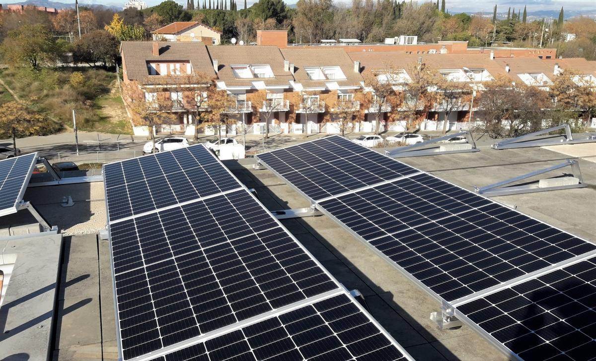
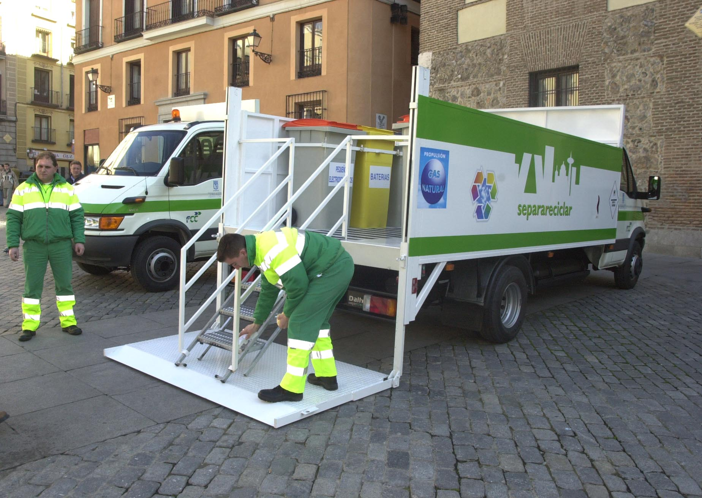
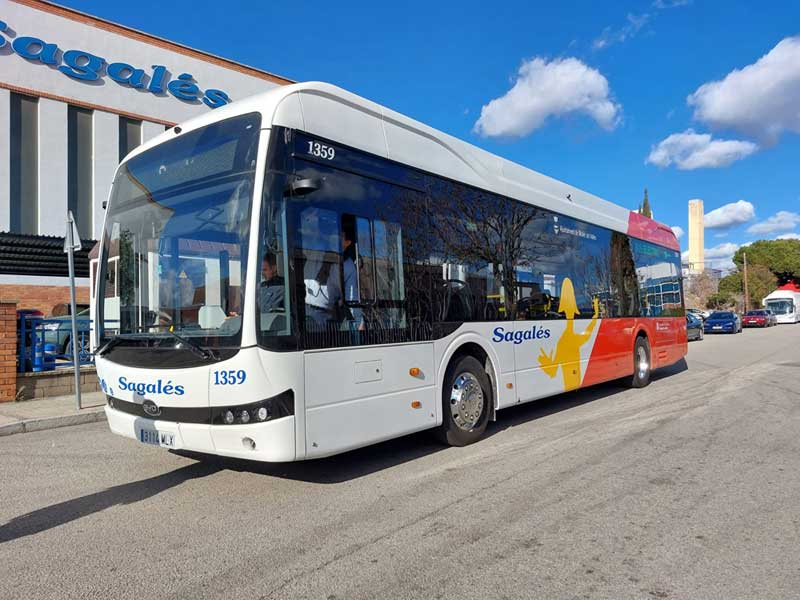

Medidas Adoptadas
-
Implementación de Energías Renovables
El Ayuntamiento ha instalado paneles solares en varios edificios públicos, reduciendo el consumo de energía convencional.
 -
Puntos de Reciclaje
Se han creado múltiples puntos de reciclaje en la ciudad para facilitar la separación de residuos.
 -
Programas de Educación Ambiental
Se implementan programas en colegios para educar a los jóvenes sobre la importancia de cuidar el medio ambiente.
-
Promoción del Transporte Sostenible
Fomento del uso de bicicletas y transporte público mediante la creación de carriles bici y mejoras en el transporte urbano.
